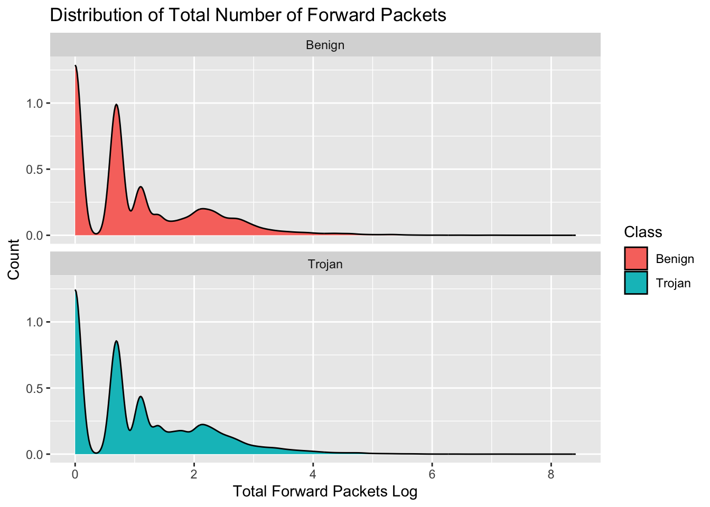

library(tidyverse)
library(tidymodels)
library(tidytext)
library(textrecipes)
library(kableExtra)
library(patchwork) # Side by Side Visuals: Add visuals togetherTrojan Horse Final Project
Installing the libraries
Data Loading & Splitting
trojan_data <- read.csv("/Users/tarikkrestalica/FinalProject/FinalProject/Trojan_Detection.csv")
set.seed(434)
data_split <- initial_split(trojan_data, strata = Class)
train <- training(data_split)
test <- testing(data_split)Statement of Purpose
With the data set we’ve loaded, our goal is for a given network packet with its records, we want to predict whether or not a network packet is either trojan or benign and find the predictors that is significant towards our Class variable. This is targeted for businesses, organizations, individuals, large supply chains, and industrial sectors seeking to better protect themselves of these threats, raise awareness of trojan horse, and maintain a safe digital life of trojan horses, and potentially different branches of cyberattacks.
Executive Summary
Introduction
In today’s modern-day, digitalized world, there’s nothing more vulnerable to businesses, organizations, industrial sectors, and individuals than the threat of a cyberattack. One of the most common cyberattacks are trojan horses, which is software that appears to be legitimate but harmful under the surface. You can think of a trojan horse as a dubious sabotage: say you got an invitation to a birthday party at Sky Zone from a friend of yours, and it’s a legit invitation, however, just as you enter, you find out that there’s no birthday party after all. You are left puzzled, confused, slightly angry even though you though it was a legitimate event, questioning your friend and wondering where you went wrong. Similarly, whether or not its an application, ad or website, it’s hard for the user to understand if it’s legitimate and real. Network packets are classified as trojan in a variety of ways, from a malicious hacker either initiating the request or during the packet modification process. Mitigating and preventing trojan horse is crucial to help our autonomous way of life stay afloat, something that can only be answered and better understood by understanding the features of our network packet.
Exploratory Data Analysis
Our data set consists of 177482 rows and 86 columns.
Column Analysis
We have 81 numeric columns and 5 categorical columns.
Missing Values
X Flow.ID
0 0
Source.IP Source.Port
0 0
Destination.IP Destination.Port
0 0
Protocol Timestamp
0 0
Flow.Duration Total.Fwd.Packets
0 0
Total.Backward.Packets Total.Length.of.Fwd.Packets
0 0
Total.Length.of.Bwd.Packets Fwd.Packet.Length.Max
0 0
Fwd.Packet.Length.Min Fwd.Packet.Length.Mean
0 0
Fwd.Packet.Length.Std Bwd.Packet.Length.Max
0 0
Bwd.Packet.Length.Min Bwd.Packet.Length.Mean
0 0
Bwd.Packet.Length.Std Flow.Bytes.s
0 0
Flow.Packets.s Flow.IAT.Mean
0 0
Flow.IAT.Std Flow.IAT.Max
0 0
Flow.IAT.Min Fwd.IAT.Total
0 0
Fwd.IAT.Mean Fwd.IAT.Std
0 0
Fwd.IAT.Max Fwd.IAT.Min
0 0
Bwd.IAT.Total Bwd.IAT.Mean
0 0
Bwd.IAT.Std Bwd.IAT.Max
0 0
Bwd.IAT.Min Fwd.PSH.Flags
0 0
Bwd.PSH.Flags Fwd.URG.Flags
0 0
Bwd.URG.Flags Fwd.Header.Length
0 0
Bwd.Header.Length Fwd.Packets.s
0 0
Bwd.Packets.s Min.Packet.Length
0 0
Max.Packet.Length Packet.Length.Mean
0 0
Packet.Length.Std Packet.Length.Variance
0 0
FIN.Flag.Count SYN.Flag.Count
0 0
RST.Flag.Count PSH.Flag.Count
0 0
ACK.Flag.Count URG.Flag.Count
0 0
CWE.Flag.Count ECE.Flag.Count
0 0
Down.Up.Ratio Average.Packet.Size
0 0
Avg.Fwd.Segment.Size Avg.Bwd.Segment.Size
0 0
Fwd.Header.Length.1 Fwd.Avg.Bytes.Bulk
0 0
Fwd.Avg.Packets.Bulk Fwd.Avg.Bulk.Rate
0 0
Bwd.Avg.Bytes.Bulk Bwd.Avg.Packets.Bulk
0 0
Bwd.Avg.Bulk.Rate Subflow.Fwd.Packets
0 0
Subflow.Fwd.Bytes Subflow.Bwd.Packets
0 0
Subflow.Bwd.Bytes Init_Win_bytes_forward
0 0
Init_Win_bytes_backward act_data_pkt_fwd
0 0
min_seg_size_forward Active.Mean
0 0
Active.Std Active.Max
0 0
Active.Min Idle.Mean
0 0
Idle.Std Idle.Max
0 0
Idle.Min Class
0 0 From the above data set, we can see that there is not a single missing value for any of our available predictors.
Firstly, before diving into crucial information about our packets, how is our Class column distributed across the data set?

From the plot above, we notice that the distribution of trojan and benign network packets in the data set is well-balanced, and distributed on an almost equal basis.
We obtain the counts of each Class below with the following table.
| Class | n |
|---|---|
| Trojan | 90683 |
| Benign | 86799 |
Now, we seek to explore the relationship with some of the variables towards our Class variable of interest.
Are there any differences between benign and trojan network packets? To start, first we seek to understand the basic parts from its length, the forward and backward packets, etc. This will be used as a starting point that motivates this discussion.
What if we consider the number of forward packets? Do Trojan packets require more forward packets to know the destination?

From this, we can see that Total.Fwd.Packets is heavily right-skewed when converting it to a logarithm. When looking at the distribution of Benign and Trojan, they are highly similar, which doesn’t tell us much about the relationship between the two variables.
What happens if we consider a boxplot?

Summary statistics in log packets.
| Class | mean_logTotalFwdPackets | median_logTotalFwdPackets | twentyFifth_logTotalFwdPackets | seventyFifth_logTotalFwdPackets |
|---|---|---|---|---|
| Benign | 1.003459 | 0.6931472 | 0 | 1.609438 |
| Trojan | 1.062056 | 0.6931472 | 0 | 1.791759 |
In summary:
- Mean number of log
Total.Fwd.Packetsfor Benign network packets: 1.0034588 log packets. - Mean number of log
Total.Fwd.Packetsfor Trojan network packets: 1.0620557 log packets.
Benign network packets require less log forward packets than Trojan network packets based on mean.
What happens when we convert back to packets from log packets?
| Class | mean_TotalFwdPackets | median_TotalFwdPackets | twentyFifth_TotalFwdPackets | seventyFifth_TotalFwdPackets |
|---|---|---|---|---|
| Benign | 6.951843 | 2 | 1 | 5 |
| Trojan | 6.587132 | 2 | 1 | 6 |
In summary:
- Mean number of
Total.Fwd.Packetsfor Benign network packets: 6.9518426 packets. - Mean number of
Total.Fwd.Packetsfor Trojan network packets: 6.5871317 packets.
Benign network packets require more forward packets than Trojan network packets based on mean. This implies that a trojan network packet, it needs less information to go from source to destination.
Next, what if we consider the number of backward packets? Do Trojan packets require more backward packets to get to the right source?
Warning: Removed 36670 rows containing non-finite values (`stat_density()`).
From this, we can see that Total.Backward.Packets is heavily right-skewed when converting it to a logarithm. When looking at the distribution of Benign and Trojan, they are highly similar, comparing to the previous density plot between Total.Fwd.Packets and our Class.
What happens if we consider a boxplot?
Warning: Removed 36670 rows containing non-finite values (`stat_boxplot()`).
From the table above, based on the median, we can see that Trojan network packets require more log backward packets to go from destination to source as opposed to Benign network packets.
What happens when we convert back to packets from log packets?
| Class | mean_TotalBackwardPackets | median_TotalBackwardPackets | twentyFifth_TotalBackwardPackets | seventyFifth_TotalBackwardPackets |
|---|---|---|---|---|
| Benign | 11.196439 | 1 | 0 | 4 |
| Trojan | 8.666147 | 1 | 0 | 4 |
In summary:
Mean number of
Total.Backward.Packetsfor Benign network packets: 11.1964393 packets.Mean number of
Total.Backward.Packetsfor Trojan network packets: 8.6661472 packets.
Benign network packets require less packets than Trojan network packets based on mean.
PCA
Because we have 86 columns, we seek to reduce the number of variables in the data set utilizing Principal Components Analysis.
# tune_grid <- grid_regular(
# num_comp(range(1, 25)),
# threshold(range(0, 1)),
# levels = 6
# )
#
# my_rec <- recipe(Class ~ ., data = train) %>%
# step_rm(all_nominal_predictors()) %>%
# step_zv(all_predictors()) %>%
# step_normalize(all_numeric_predictors()) %>%
# step_pca(num_comp = tune(), threshold = tune())
#
#
# pca_loading <- my_rec %>%
# prep()Model Construction
set.seed(434)
train_folds <- vfold_cv(train)Model Interpretation
Conclusion
References
Missing values for each column: https://www.projectpro.io/recipes/find-count-of-missing-values-dataframe#:~:text=We%20will%20use%20built%2Din,times%20the%20condition%20was%20True.&text=To%20calculate%20the%20number%20of,We%20use%20colSums()%20function. Packet Forwarding: https://www.geeksforgeeks.org/what-is-packet-forwarding/